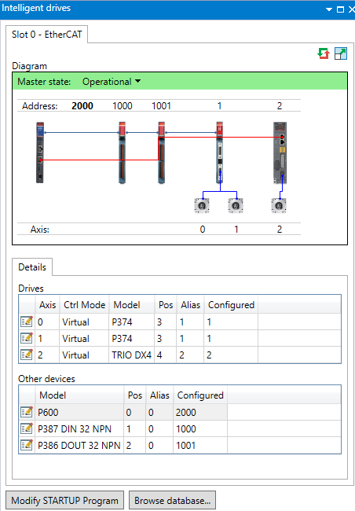
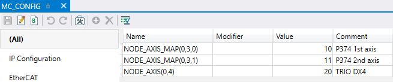

System Array (MC_CONFIG)
NODE_AXIS(slot, node) = value
This 2D array can be used to over-ride the drive addressing of any EtherCAT node axis. This can be used to define a user specific axis map to fix axes from different sources in place.
The array is 2-dimensional, the first dimension is the master slot identifier, the second dimension is the position of the node within that master network.
An error is raised if the axis requested is already in use when the EtherCAT protocol is started.
|
0 |
EtherCAT axis is allocated automatically (default) |
|
>= 1 |
EtherCAT drive is located at this axis |
Configure single axis drive TRIO DX4 from axis number 2 to axis number 20 and P374 2 servo axis from axis number 0 and 1 to axis number 10 and 11 respectively.
|
Unit |
Old Axis No. |
New Axis No. |
|
P374 |
0 |
10 |
|
1 |
11 |
|
|
TRIO DX4 |
2 |
20 |
Initial configuration before commands in MC_CONFIG:

MC_CONFIG entries to change axis numbers:

Text mode:
NODE_AXIS_MAP
(
0
,
3
,
0
) =
10
' P374 1st axis
NODE_AXIS_MAP
(
0
,
3
,
1
) =
11
' P374 2nd axis
NODE_AXIS
(
0
,
4
) =
20
' TRIO DX4
After Reset MC:
NODE_AXIS_COUNT , NODE_INDEX , NODE_PROFILE , NODE_AXIS_MAP